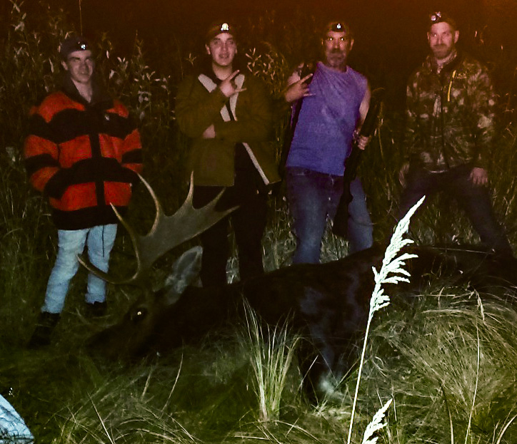
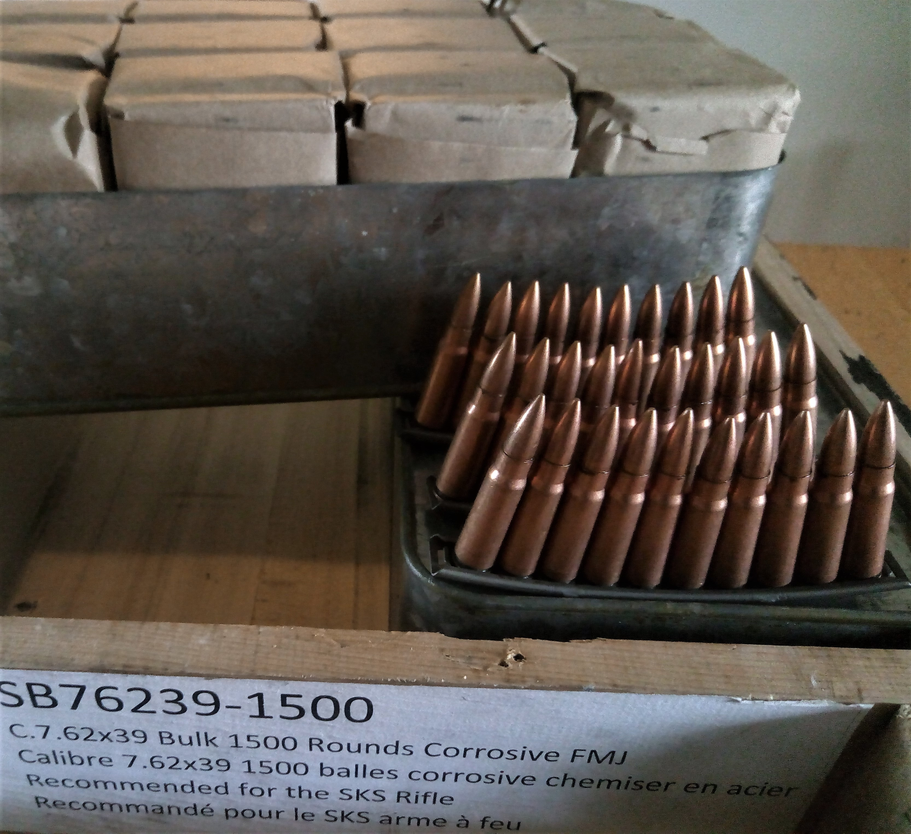
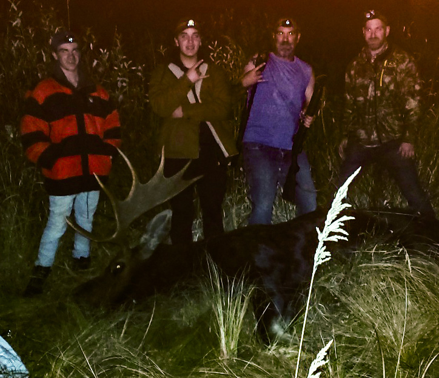
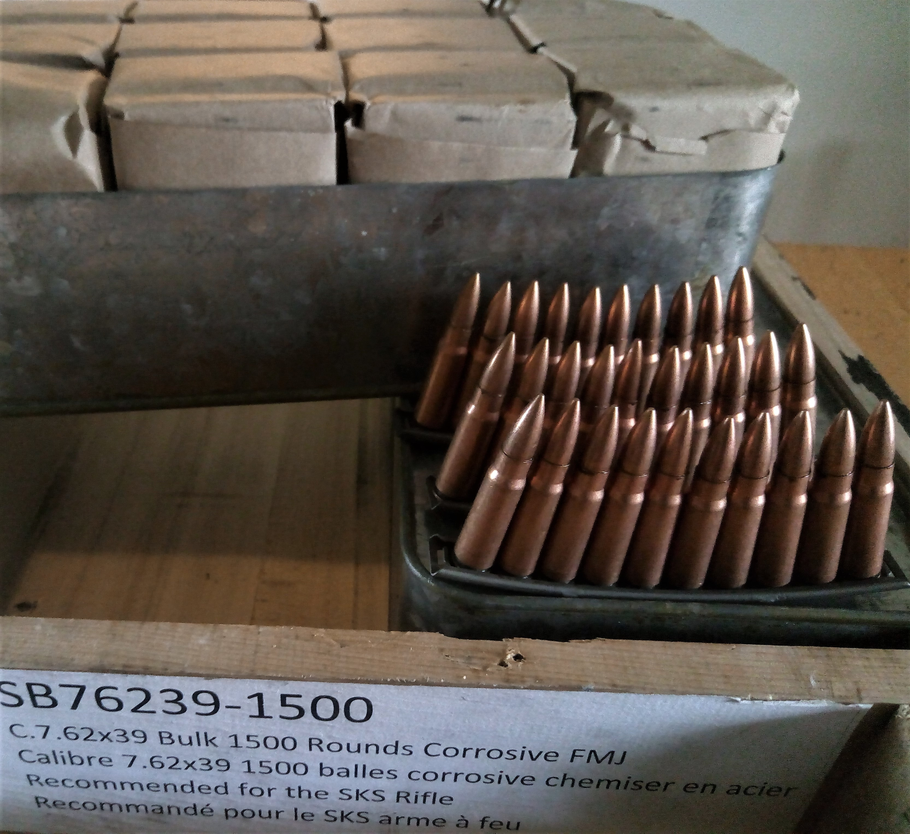

I am a mostly self taught "backyard" mechanic.
If is broke I can fix it, although I would rather build/restore cars than fix them...
I bought my first rifle when I took up hunting, now I'm hooked!
I have a fascination with historical firearms and weapons of war.
I Took up hunting with my brothers, being out in the wild gives me time to think and relieve stress... mostly lol. Hunting in the Okanagan sure is difficult with so many people around!
Pre modern day tyranny, I used to travel the province, the U.S. west coast, and the upper states to Ontario. Also many trips to Vancouver/Seattle for concerts with the boys. Not so much anymore...